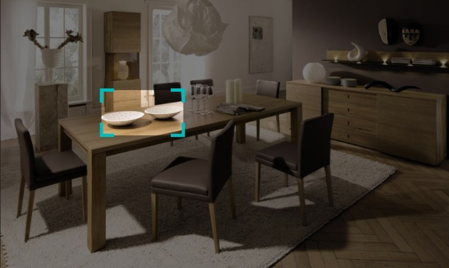

Instagram Discover is a feature that allows users to visually search products to discover ideas and inspirations. This feature aims to assist Instagrammers make purschasing decisions by familiarizing them with the products in the context of its intended use.

Context
This was a 1-week long side-project done in the summer of 2018, in collaboration with my friend, Jenny Nguyen. I took on this project as a means to develop my technical and conceptual thinking skills. My specific roles included conducting research, developing insights, creating low and high fidelity prototypes and user testing. Primary tools I used were Sketch, Principle, Photoshop, and Illustrator.
In September of 2018, Snapchat announced a partnership with Amazon and introduced a feature that allows Snapchat users to visually scan items available to purchase on amazon.com
The Idea
Instagram Discover is a feature that lets users scan products, then provides a curated feed of the product in context, and another feed that shows similar items available for purchase on the application itself. The feature uses existing computer vision technology to recognize and understand digital images and provides appropriate output accordingly.
RESEARCH
Insight - 01
Insight - 01
Insight - 01
Opportunity
COMPETITOR ANALYSIS
Pinterest Lens
After developing the idea of Instagram Discover, we came across a similar feature called Pinterest Lens. The function of Pinterest Lens is comparable to Instagram Discover, but as a recommendation-orientated platform, a lot of its content is aggregated from the web. There is a lack of original content from Pinners.
Conversely, Instagram has a higher percentage of original content, thus, building a digital space with a stronger sense of credibility - even personality. And as influencer marketing is prevalent on Instagram, product posts from prominent profiles influence user’s purchasing decisions, creating aspirational value that Pinterest lacks.
TECHNOLOGY
Computer Vision
Instagram Discover would primarily be using computer vision technology, a form of artificial intelligence. Also known as image recognition, this technology allows machines to interpret the photo taken and categorize what it “sees.” Instagram has the added advantage of utilizing hashtags which may be used to validate the product query process.

Google's Cloud Vision model
Signal-to-Noise
We looked at the experience of Pinterest Lens and Google's Search by Image feature and recognized a technological limitation. Photos taken generally do not have the product visually isolated. This adds noise to the image which makes it harder for computer vision to detect the object. Due to this project's time constraint, we weren't able to implement a solution to our prototype. However, we recognized the need for a feature that would allow the user to adjust the window size to target the exact object being searched.
Value
Onboarding
When the guest connects to the VTSL wifi, they are prompted to join the game if they are interested in participating. Once connected, they are asked to join a team of their choice.
Earworm
Earworm is one of the 2 mini-games our team developed for this intervention. In earworm one team chooses a prompt, that is meant to be an odd/unrecognizable sound. The sound crew plays the chosen sound clip, and the opposing team has to figure out where the kooky noise originates from.
The first team votes for the prompt they want the opposing team to guess. For the second round of the game, it is the opposing team that votes for the prompt.
While the audio technician plays the audio prompt, one team guesses what the sound is. The responses are dispalyed live on the projector screen for the audeince to see discuss and laugh about.
At the end of each game, the team score gets displayed on the projector screen while the individual score is displayed on the smartphone.

After the mini-games, the final scoreboard is displayed and the winners of Early Bird can input their emails to claim their prizes. Prizes tend to be in the form of show tickets or food vouchers as this is an existing feature of their live show experience.